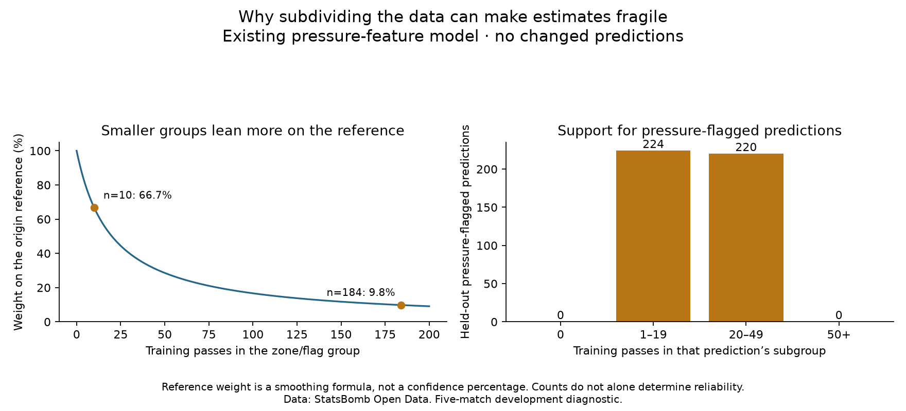

Football analyst training · Phase 3 · Lesson 51
More detail creates smaller groups.
Splitting a starting zone into pressure-flagged and not-flagged passes leaves fewer examples in each group.
Completed assignment
224 of our 444 pressure-flagged predictions use a training subgroup with fewer than 20 passes. In the familiar example zone, there are 184 not-flagged training passes and only ten flagged passes.

What smoothing does
Imagine one completion from one attempt. The raw rate is 100%. With an 80% reference and our smoothing strength 20, the estimate becomes:
(1 + 20 × 0.80) / (1 + 20) = 80.95%
The model avoids treating one success as certainty. With more local data, its own group rate has more influence. These are formula weights, not confidence levels.
The takeaway
More features create more detailed groups, but each group needs data. This audit shows the tradeoff; it does not prove why the prior experiment improved or worsened in a match.
Run 51_completion_group_support.py in Spyder. It explains existing predictions without changing them. The worked assignment is complete with assistance; ask for detail about smoothing if needed.